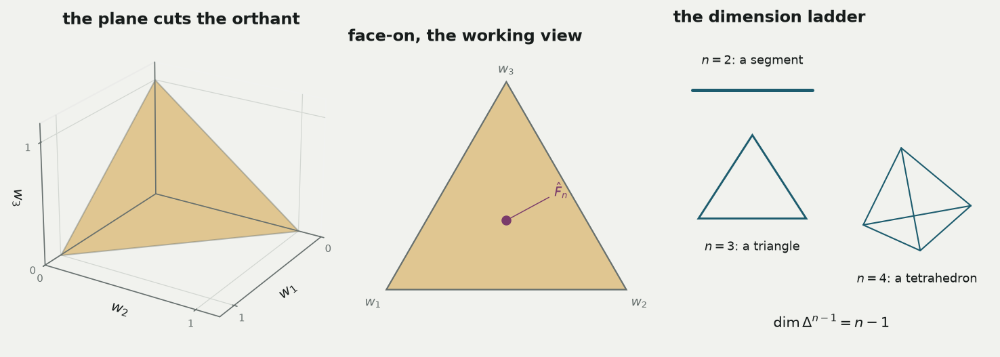
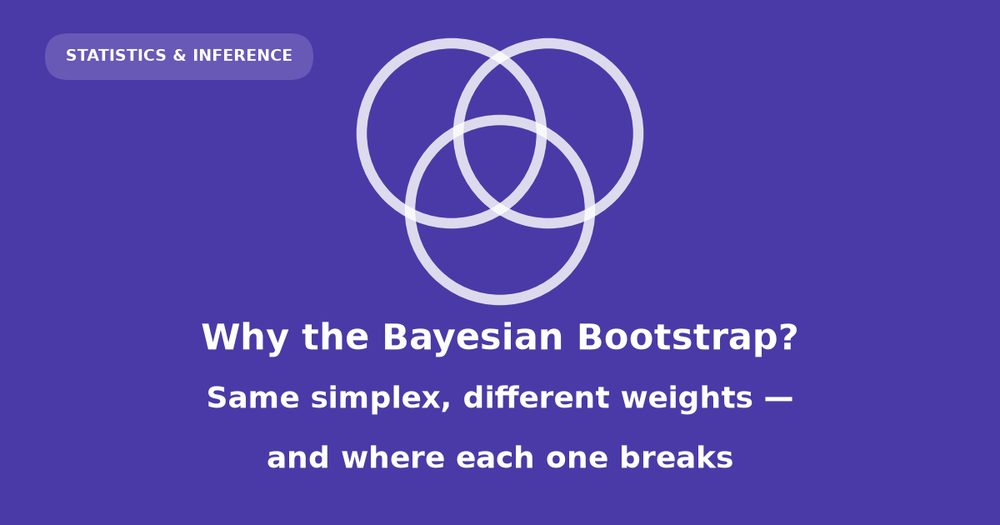
Suppose you have fifty-nine monthly returns and you want to know the average. Not the average of those returns — you can compute that exactly, it is a fact about the spreadsheet. You want the average of the process that generated them, and you want to know how far your fifty-nine numbers might have led you astray.
The bootstrap’s answer is to perturb the data and watch the answer move. Efron’s version perturbs it by resampling: draw fifty-nine months with replacement, recompute, repeat. Rubin’s version perturbs it by reweighting: leave the months alone and randomise how much each one counts.
Those sound like different ideas. They are the same idea, and the entire content of this post is the sense in which that is true:
A statistic is a function of a distribution. Both bootstraps put a random probability distribution on the observed data and push it through the statistic. They differ only in the distribution they place on the weights — Efron on a lattice, Bayes on the whole simplex — and everything else, including where each one breaks, follows from that.
Everything below is derived rather than cited. Where a derivation is genuinely too long for a blog post there is exactly one such place, and it is flagged. Every closed form stated in the prose is also computed in a code cell and asserted against simulation, so this page does not build if the algebra and the arithmetic disagree.
Caveat: what this post is not
Nothing here is investment advice. The returns are a convenient two-series dataset with a genuine rare-event problem in it, nothing more. Monthly equity returns are also not independent and identically distributed — they cluster in volatility — and both bootstraps assume they are. That assumption is a larger source of error than anything else discussed in this post; §the honest limits says what to do about it.
A statistic is a functional of a distribution
What are you actually trying to estimate?
Not a number computed from a dataset. A property of the unknown distribution \(F\) that produced the dataset. Write it \(T(F)\): feed in a distribution, get out a number. Every statistic worth the name is such a functional.
| you say | you mean |
|---|---|
| mean | \(T(F) = \int x \, dF(x)\) |
| median | \(T(F) = \inf\{x : F(x) \ge 1/2\}\) |
| mode | \(T(F) = \arg\max_x f(x)\) |
| maximum | \(T(F) = \sup\{x : F(x) < 1\}\) |
| minimum | \(T(F) = \inf\{x : F(x) > 0\}\) |
| tail risk | \(T(F) = F(-5\%)\) |
You do not have \(F\). You have \(n\) observations, and the distribution that puts mass \(1/n\) on each of them:
\[\hat F_n = \frac{1}{n}\sum_{i=1}^{n} \delta_{x_i}\]
where \(\delta_{x}\) is a point mass at \(x\), and \(n\) is the sample size throughout this post. The plug-in estimate is \(T(\hat F_n)\): pretend \(\hat F_n\) is \(F\) and evaluate. The sample mean is the plug-in mean, the sample median is the plug-in median.
That reframes the uncertainty question precisely. It is no longer “how much does my number wobble?” but: how much does \(T\) move as \(F\) ranges over the distributions the data find plausible? Answer that and you are done — you need a way to generate plausible distributions.
The data in this post, and what each answer is for
Four datasets recur below. Two are deliberately tiny, because they are small enough to enumerate exactly — which is how the closed forms get checked rather than asserted. Two are real, and carry a decision behind them.
| dataset | \(n\) | the functional \(T(F)\) | what the answer is for |
|---|---|---|---|
| toy sample \(x = (1,2,3,4,10)\) | 5 | mean, median, max, min, mode | exhaustive verification |
| three points \(x = (1,3,10)\) | 3 | mean, median | drawing the geometry |
| S&P 500 monthly returns | 59 | mean, median, \(F(-5\%)\) | market risk reporting |
| IBM monthly returns | 59 | the same, plus the maximum | is this stock different? |
| MNIST test set | 10,000 | accuracy, per-class recall | ship / don’t ship |
The toy sample \(x = (1,2,3,4,10)\) is chosen so that \(\bar x = 4\) and \(\tilde s^2 = 10\) come out round, and so that one clear outlier makes the bootstrap distribution of the mean visibly skewed. At \(n = 5\) there are only 126 possible resamples, so every law quoted for it below is computed by enumerating all of them, not by simulating.
The three-point sample \(x = (1,3,10)\) exists because \(n = 3\) is the largest sample whose space of weight vectors can be drawn on a page. Every triangle in this post is that sample.
The two return series and the MNIST test set are introduced properly where they are used — the returns here and MNIST here — because in both cases the interesting part is not the data but the decision resting on it.
Generating plausible distributions is easier than it sounds, if you only let the masses move.
Efron’s bootstrap is a weighted bootstrap in disguise
What is a resample, viewed as a distribution?
Draw \(n\) observations from your sample with replacement. Let \(N_i\) be the number of times \(x_i\) was drawn. Then \(\sum_i N_i = n\), and by the definition of independent draws from a uniform choice over \(n\) items,
\[N = (N_1, \dots, N_n) \sim \text{Multinomial}(n;\ 1/n, \dots, 1/n).\]
Now write down the empirical distribution of the resample. The value \(x_i\) appears \(N_i\) times out of \(n\), so it carries mass \(N_i / n\):
\[F^*_n = \sum_{i=1}^n \frac{N_i}{n}\,\delta_{x_i} = \sum_{i=1}^n w_i\,\delta_{x_i}, \qquad w = N/n.\]
This is not a modelling assumption or an approximation. It is bookkeeping: a resample and its weight vector are the same object written two ways. Efron’s bootstrap is a weighted bootstrap, with \(w\) confined to multiples of \(1/n\).
The moments follow from the multinomial. With \(p_i = 1/n\):
\[E[N_i] = n p_i = 1, \qquad \operatorname{Var}(N_i) = n p_i (1 - p_i) = 1 - \tfrac1n, \qquad \operatorname{Cov}(N_i, N_j) = -n p_i p_j = -\tfrac1n.\]
Divide by \(n\) to get the weights, remembering that variances pick up \(1/n^2\):
\[E[w_i] = \frac{1}{n}, \qquad \operatorname{Var}(w_i) = \frac{n-1}{n^3}, \qquad \operatorname{Cov}(w_i, w_j) = -\frac{1}{n^3}.\]
The covariance is negative, and it has to be. The weights sum to one, so if one goes up another must come down. That is not a quirk of the multinomial; it is a consequence of the constraint, and it will reappear for the Bayesian weights with the identical sign and a different scale.
How many distinct weight vectors are there? A weight vector is determined by the counts \((N_1, \dots, N_n)\), non-negative integers summing to \(n\). That is the classic stars-and-bars count: lay out \(n\) stars and \(n-1\) bars in a row, and each arrangement encodes one allocation. There are
\[\binom{2n-1}{n-1}\]
such arrangements.
At \(n = 5\) that is \(\binom{9}{4} = 126\) patterns, and enumerating them with their exact multinomial probabilities gives a total of 1.000000000000 — the enumeration is complete. At \(n = 59\), the size of the returns window used later, it is \(\binom{117}{58} \approx 1.218 \times 10^{34}\).
So Efron’s bootstrap draws from an astronomically large but strictly finite set of weight vectors. The weights are confined to a lattice inside some space. Naming that space is the next step, and it turns out to be the whole story.
The simplex
What space do the weights live in?
Two conditions define it. Each weight is non-negative, \(w_i \ge 0\), which confines you to the positive orthant of \(\mathbb{R}^n\). The weights sum to one, \(\sum_i w_i = 1\), a single linear equation that slices the orthant with a hyperplane. The slice is the standard simplex:
\[\Delta^{n-1} = \Big\{ w \in \mathbb{R}^n : w_i \ge 0,\ \sum_{i=1}^n w_i = 1 \Big\}.\]
The superscript is \(n-1\) because one equation removes one degree of freedom: fix any \(n-1\) of the weights and the last is determined.
Four features of this object carry the rest of the post.
The corners are degenerate distributions. At corner \(i\), \(w_i = 1\) and everything else is zero: all your mass on a single observation.
The edges and faces are deletions. A point lies on a face exactly when some \(w_i = 0\) — that observation has been removed from the distribution entirely. Remember this; it explains almost every failure discussed later.
The centre is the plug-in. \(w = (1/n, \dots, 1/n)\) is \(\hat F_n\) itself.
The volume is \(1/(n-1)!\), so the uniform density on the simplex is the constant \((n-1)!\). At \(n = 59\) the simplex is a \(58\)-dimensional polytope of volume \(4.254 \times 10^{-79}\), and Efron’s \(1.2 \times 10^{34}\) lattice points sit inside it.
The most important thing to internalise is that a point in this triangle is not a summary of a distribution. It is a distribution.
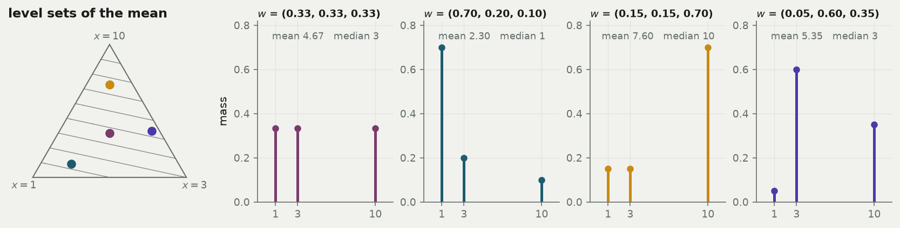
The level sets are straight because the mean \(\sum_i w_i x_i\) is a linear function of \(w\). Any functional that is linear in the weights will have flat level sets like these; the median’s will not be, and that difference is exactly what makes the median harder.
Now that the space is named, put a distribution on it.
Where the Dirichlet comes from
If the parameter is a point of the simplex, what is its posterior?
Do this as an ordinary Bayesian calculation, with no appeal to anything called a Dirichlet until it appears on its own.
Assumption
\(F\) is discrete and supported on the \(n\) observed values. The unknown parameter is then the probability vector \(p = (p_1, \dots, p_n)\) attached to those values, and the parameter space is exactly the simplex \(\Delta^{n-1}\).
This is a strong assumption, and both bootstraps make it. The Bayesian version is merely the one that forces you to write it down.
Step 1 — the likelihood. If the data are \(n\) draws from the distribution with masses \(p\), and observation \(i\) was seen \(n_i\) times, the likelihood is multinomial:
\[L(p) \propto \prod_{i=1}^n p_i^{\,n_i}.\]
With distinct data — no exact ties, which is the normal case for returns — every \(n_i = 1\), so
\[L(p) \propto \prod_{i=1}^n p_i .\]
Step 2 — a prior of matching shape. Try a prior of the form \(\pi(p) \propto \prod_i p_i^{\alpha_i - 1}\) on the simplex. This is the Dirichlet density, but nothing yet depends on knowing its name.
Step 3 — multiply. Posterior \(\propto\) prior \(\times\) likelihood:
\[\pi(p \mid \text{data}) \;\propto\; \prod_i p_i^{\alpha_i - 1} \cdot \prod_i p_i^{\,n_i} \;=\; \prod_i p_i^{\alpha_i + n_i - 1}.\]
The exponents simply increment. That is conjugacy — shown, rather than asserted: the posterior is the same shape as the prior with \(\alpha_i \mapsto \alpha_i + n_i\).
Step 4 — take the limit. Set every \(\alpha_i = a\) and let \(a \to 0\). The prior \(\propto \prod_i p_i^{-1}\) is improper — it does not integrate to a finite number. But with \(n_i = 1\) the posterior exponents are \(a + 1 - 1 = a \to 0\)… in the exponent of the density’s \(p_i^{\alpha_i-1}\) form, giving posterior parameters \(\alpha_i = a + n_i \to 1\). So the posterior is
\[p \mid \text{data} \;\sim\; \text{Dirichlet}(1, 1, \dots, 1),\]
whose density \(\propto \prod_i p_i^{0} = 1\) is constant: the uniform distribution on the simplex. That is the Bayesian bootstrap.
Caveat: the uniform is the posterior, not the prior
This is the single most commonly garbled point in the topic. The Bayesian bootstrap’s prior is the improper \(\prod_i p_i^{-1}\), which is emphatically not flat — it piles all its mass on the edges. The posterior, after the data have incremented every exponent to 1, is flat. Anyone who tells you the method “assumes a uniform prior on the simplex” has it exactly backwards.
Two sanity checks make the construction believable.
First, \(E[w_i \mid \text{data}] = 1/n\) by symmetry, so the posterior mean of \(F\) is exactly \(\hat F_n\). The method is centred on the plug-in estimate — it does not pull your answer anywhere.
Second, \(a \to \infty\) collapses the posterior onto the single point \((1/n, \dots, 1/n)\): infinite prior confidence that all masses are equal. So \(a\) is a smoothing knob, \(\infty\) is “I already know the answer”, and \(0\) is the let-the-data-speak end.
Why the Dirichlet is forced, not merely convenient
Here is the property that makes this family the only sensible choice. Suppose you merge two of the categories — you stop distinguishing observation 1 from observation 2 and ask only about the combined mass \(p_1 + p_2\). A coherent theory must give the same answer whether you bin the sample space coarsely from the start or merge afterwards.
The Dirichlet does. Merging coordinates keeps you inside the family with the parameters added:
\[(p_1 + p_2, p_3, \dots, p_n) \sim \text{Dirichlet}(\alpha_1 + \alpha_2, \alpha_3, \dots, \alpha_n).\]
Iterating this to a set \(S\) of size \(k\) with all \(\alpha_i = 1\) collapses everything to two categories and gives
\[\sum_{i \in S} w_i \;\sim\; \text{Beta}(k,\ n-k).\]
This one line is worth more than any other in the post. Accuracy, tail probabilities, per-class recall, any proportion at all — all of them are sums of subsets of the weights, so all of them have an exact Beta posterior with no simulation whatsoever. It is used repeatedly below.
Pushing the same consistency requirement to a continuous sample space gives Ferguson’s Dirichlet process, and the Bayesian bootstrap is its \(\alpha \to 0\) posterior.
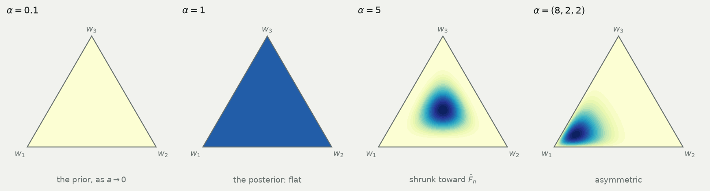
Why exponentials, and why the weights must sum to one
Where do the three lines of sampling code come from?
Everyone writes the Bayesian bootstrap as: draw \(n\) exponentials, divide by their sum. That looks like a trick. It is not — it is the \(\alpha = 1\) case of a general construction, and the derivation also explains why the normalisation is free.
Let \(G_1, \dots, G_n\) be independent with \(G_i \sim \text{Gamma}(\alpha_i, 1)\), so the joint density is
\[f(g) = \prod_{i=1}^n \frac{1}{\Gamma(\alpha_i)} g_i^{\alpha_i - 1} e^{-g_i}.\]
Change variables to the total and the direction: \(s = \sum_i g_i\) and \(w_i = g_i / s\). The inverse map is \(g_i = s\,w_i\). Because \(w\) has only \(n-1\) free coordinates, use \((w_1, \dots, w_{n-1}, s)\) as the new variables; the Jacobian of \(g_i = s w_i\) is
\[\left|\frac{\partial g}{\partial(w_1,\dots,w_{n-1},s)}\right| = s^{\,n-1}.\]
Substituting \(g_i = s w_i\) and \(\sum_i g_i = s\):
\[f(w, s) \;\propto\; \prod_i (s w_i)^{\alpha_i - 1} e^{-s} \cdot s^{n-1} \;=\; \underbrace{s^{\sum_i \alpha_i - 1} e^{-s}}_{\text{Gamma}(\sum \alpha_i,\,1) \text{ in } s} \;\times\; \underbrace{\prod_i w_i^{\alpha_i - 1}}_{\text{Dirichlet}(\alpha) \text{ in } w}.\]
The joint density factors into a function of \(s\) alone times a function of \(w\) alone, with no cross-term. That single factorisation delivers three facts at once: \(w \sim \text{Dirichlet}(\alpha)\), \(S \sim \text{Gamma}(\sum_i \alpha_i, 1)\), and \(w \perp S\).
Now set every \(\alpha_i = 1\). Since \(\text{Gamma}(1,1) = \text{Exp}(1)\), the recipe becomes: draw \(n\) exponentials, divide by their sum. The exponentials are not a trick; the normalisation costs nothing precisely because the direction carries no information about the length.
The second construction: break a stick
Rubin’s original description is more vivid. Scatter \(n-1\) points uniformly on the interval \([0,1]\), sort them, and take the \(n\) gaps between consecutive points (counting the ends). Those uniform spacings are exactly \(\text{Dirichlet}(1,\dots,1)\).
The two constructions agree by the Rényi representation. The spacings picture hands you something the gamma picture hides: the partial sums come for free.
\[w_1 + \dots + w_j \;\stackrel{d}{=}\; U_{(j)},\]
the \(j\)-th order statistic of \(n-1\) uniforms. That fact does all the work for the median later.
Both constructions and the library agree, and normalised \(\text{Gamma}(4,1)\) variates give \(\text{Dirichlet}(4,\dots,4)\) as the factorisation predicts. Against the exact \(\text{Beta}(1, n-1)\) marginal at \(n = 6\), a Kolmogorov–Smirnov test gives \(p\) = 0.134 for the exponential construction and \(p\) = 0.735 for uniform spacings; the two samples are indistinguishable from each other (\(p\) = 0.520), and the \(\text{Gamma}(4,1)\) check against \(\text{Beta}(4, 4(n-1))\) gives \(p\) = 0.915.
Why the weights must sum to one
Three arguments, shallowest first.
1. It is the definition of the object. \(F_w\) is supposed to be a probability distribution. Total mass one is what makes it one. Without it, \(F_w(-5\%)\) is not a probability and there is nothing to interpret.
2. Otherwise the statistic stops behaving like a statistic. With \(\sum_i w_i = 1\), shifting every observation by \(c\) shifts the weighted mean by \(c\). Without the constraint, \(\sum_i w_i (x_i + c) = \sum_i w_i x_i + c\sum_i w_i\), so the answer scales with the total. And the total is random: \(\sum_i E_i \sim \text{Gamma}(n, 1)\) has standard deviation \(\sqrt n\) against a mean of \(n\), a relative fluctuation of \(1/\sqrt n\) — the same order as the standard error you are trying to measure. Skipping the normalisation roughly inflates your uncertainty by \(\sqrt 2\).
On the S&P window, dividing by \(n\) instead of by \(\sum_i E_i\) inflates the standard deviation of the bootstrapped mean by a factor of 1.12 — against the predicted \(\sqrt 2 \approx 1.41\).
3. The simplex is the parameter space. This is the real reason. The constraint is not something imposed on the posterior after the fact; it is the domain the posterior lives on. Sum-to-one and the negative correlation between weights are the same geometric fact seen from two sides.
The moments, and the ratio
By symmetry \(E[w_i] = 1/n\) for \(\text{Dirichlet}(1,\dots,1)\). Merging gives \(w_i \sim \text{Beta}(1, n-1)\), whose variance is
\[\operatorname{Var}(w_i) = \frac{1 \cdot (n-1)}{(1 + n - 1)^2 (1 + n)} = \frac{n-1}{n^2 (n+1)},\]
and the constraint \(\operatorname{Var}(\sum_i w_i) = 0\) forces \(n \operatorname{Var}(w_i) + n(n-1)\operatorname{Cov}(w_i,w_j) = 0\), hence \(\operatorname{Cov}(w_i, w_j) = -1/[n^2(n+1)]\).
Put the two methods side by side.
Efron
\(E[w_i] = 1/n\)
\(\operatorname{Var}(w_i) = \dfrac{n-1}{n^3}\)
\(\operatorname{Cov}(w_i,w_j) = -\dfrac{1}{n^3}\)
\(P(w_i = 0) = (1-1/n)^n\)
Bayes
\(E[w_i] = 1/n\)
\(\operatorname{Var}(w_i) = \dfrac{n-1}{n^2(n+1)}\)
\(\operatorname{Cov}(w_i,w_j) = -\dfrac{1}{n^2(n+1)}\)
\(P(w_i = 0) = 0\)
Same mean, same sign of covariance, and every variance in the ratio
\[\frac{\operatorname{Var}_{\text{Bayes}}(w_i)}{\operatorname{Var}_{\text{Efron}}(w_i)} = \frac{n^3}{n^2(n+1)} = \frac{n}{n+1}.\]
Every one of those closed forms is checked against 400,000 simulated replicates in the cell above; the build fails if any disagrees.
The duality: two arrows through one conjugate pair
Are these two methods related, or do they merely resemble each other?
They are the two directions of conditioning through a single conjugate pair.
\[\underbrace{\text{counts} \mid p = \hat F_n \;\sim\; \text{Multinomial}(n;\ 1/n, \dots, 1/n)}_{\textbf{Efron: fix the probabilities, randomise the counts}}\]
\[\underbrace{p \mid \text{counts} \;\sim\; \text{Dirichlet}(1, \dots, 1)}_{\textbf{Bayes: fix the counts, randomise the probabilities}}\]
Same pair of distributions, opposite arrows. Efron’s object is a sampling distribution: the randomness answers “what other datasets might I have drawn?” The Bayesian bootstrap’s is a posterior: the randomness answers “what might \(F\) be?” They produce nearly identical numbers and mean opposite things.
Does the resampling side secretly generate a posterior?
No — and the argument is short enough to give in full.
In this model every observed \(x_i\) contributes a factor \(p_i\) to the likelihood, so \(L(p) = 0\) whenever any \(p_i = 0\). Bayes’ theorem multiplies prior by likelihood. Therefore every posterior under every prior must assign probability zero to the faces of the simplex. You watched \(x_i\) happen; no amount of conditioning can leave you believing it was impossible.
But an Efron resample that omits an observation lands exactly on a face. And the share of resamples that omit at least one observation is \(1 - n!/n^n\).
At \(n=3\) it is 0.7778; at \(n=5\), 0.9616; at \(n=12\), 0.99995; at \(n=59\) it is 1 to within \(5\times10^{-25}\). Essentially every Efron replicate corresponds to a distribution that assigns probability zero to something you watched happen. At \(n = 59\) a typical resample omits about 21.5 of the 59 observations.
So Efron’s bootstrap is not a Bayesian procedure in disguise. It is a different kind of object that happens to give nearly the same numbers.
A second, independent obstruction
Take the prior \(\text{Dirichlet}(a, \dots, a)\), so the posterior is \(\text{Dirichlet}(a+1, \dots, a+1)\) and the symmetric-Dirichlet variance formula gives, for the mean functional,
\[\operatorname{Var}(\text{mean} \mid \text{data}) = \frac{\tilde s^2}{n a + n + 1}, \qquad \tilde s^2 = \frac1n \sum_i (x_i - \bar x)^2 .\]
This is largest at \(a = 0\). Every proper prior is tighter than the Bayesian bootstrap. To reach Efron’s \(\tilde s^2/n\) you would need \(na + n + 1 = n\), that is \(a = -1/n\) — a negative concentration, which is not a distribution.
| prior | \(a\) | denominator | sd |
|---|---|---|---|
| Haldane — the Bayesian bootstrap | 0 | 6 | 1.291 |
| Perks | 0.20 | 7 | 1.195 |
| Jeffreys | 0.50 | 8.5 | 1.085 |
| uniform | 1.00 | 11 | 0.953 |
| boundary of what a prior can do | |||
| Efron bootstrap | −1/n (invalid) | 5 | 1.414 |
| classical \(s^2/n\) | — | 4 | 1.581 |
What the Bayesian bootstrap’s prior actually believes
Lest this read as a free lunch. Under the stick-breaking construction of a Dirichlet process, the first weight is \(\text{Beta}(1, \alpha)\), which concentrates at 1 as \(\alpha \to 0\). So a prior draw from the Bayesian bootstrap’s prior is a point mass at a single random location: its opinion is that the world is deterministic and you have no idea where.
At \(\alpha = 0.01\) the largest atom averages 0.9932 and the effective number of atoms is 1.02; by \(\alpha = 20\) those are 0.1222 and 22.5. This single fact explains both the good behaviour and the bad: it is why the posterior mean is exactly \(\hat F_n\), and it is why the maximum degenerates.
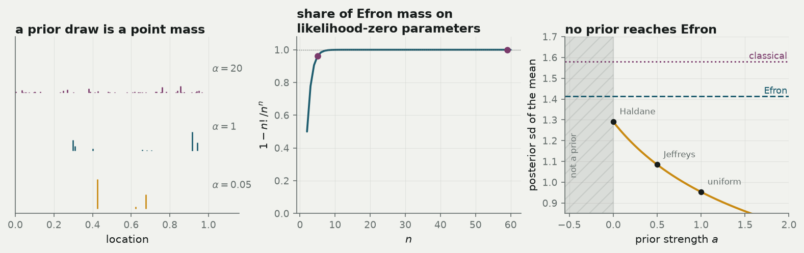
Rubin’s actual point
Rubin’s 1981 paper is less an endorsement than a diagnosis. He built the Bayesian analogue of Efron’s method and then pointed at the prior it had forced on him: no unobserved value can ever occur. Efron’s bootstrap makes the identical assumption the moment it substitutes \(\hat F_n\) for \(F\) — it simply never has to say so out loud. The value of the Bayesian version is that it puts the assumption on the page where you can object to it.
If the two live on the same space with the same centre, what does the difference actually look like?
The lattice and the triangle
How different can two distributions on the same triangle be?
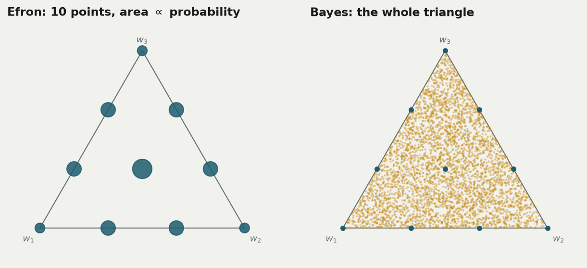
Look at one weight at a time. Efron’s marginal is a rescaled \(\text{Binomial}(n, 1/n)\) — a picket fence with a spike of height \((1-1/n)^n\) at zero. The Bayesian marginal is the continuous \(\text{Beta}(1, n-1)\).
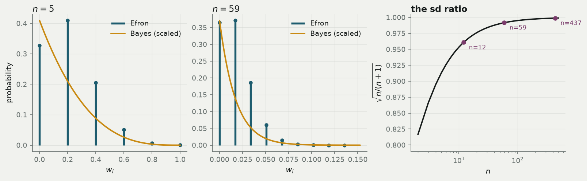
The three-denominator ladder
For the mean, do the algebra once. With weights having \(\operatorname{Var}(w_i) = v\) and \(\operatorname{Cov}(w_i,w_j) = c\),
\[\operatorname{Var}\Big(\sum_i w_i x_i\Big) = v \sum_i x_i^2 + c \sum_{i \ne j} x_i x_j = (v - c)\sum_i x_i^2 + c\Big(\sum_i x_i\Big)^2 .\]
For the symmetric Dirichlet with posterior concentration \(\alpha_0'\), \(v - c = \frac{1}{n(n\alpha_0'+1)}\) and \(c = -\frac{1}{n^2(n\alpha_0'+1)}\), so
\[\operatorname{Var}\Big(\sum_i w_i x_i\Big) = \frac{n\sum_i x_i^2 - (\sum_i x_i)^2}{n^2 (n\alpha_0' + 1)} = \frac{\tilde s^2}{n\alpha_0' + 1}.\]
Setting \(\alpha_0' = 1\) gives the Bayesian bootstrap; running the same computation with Efron’s \(v, c\) gives \(\tilde s^2 / n\). So all three familiar answers are the same quantity with a different fudge, and they are ordered:
\[\underbrace{\frac{\tilde s^2}{n+1}}_{\text{Bayes}} \;<\; \underbrace{\frac{\tilde s^2}{n}}_{\text{Efron}} \;<\; \underbrace{\frac{\tilde s^2}{n-1}}_{\text{textbook } s^2/n}\]
On the toy sample \(x = (1,2,3,4,10)\) with \(\tilde s^2 = 10\): variances 1.6667 < 2.0000 < 2.5000, standard deviations 1.2910 < 1.4142 < 1.5811, and a simulated check at \(B = 200\,000\) giving 1.2925 and 1.4147.
The asymptotic position, stated honestly
For smooth functionals both bootstraps converge to the same normal limit. That is Lo’s 1987 theorem for the Bayesian bootstrap, and Præstgaard and Wellner (1993) generalise it: any exchangeable weighting scheme with the right first two moments gets the same limit. Efron’s multinomial weights, Dirichlet weights and Poisson weights are three members of one family.
This is the one result in the post I am not deriving — the proof is a functional central limit theorem and genuinely does not fit. What I can do is verify its consequence numerically, which the \(n = 437\) row of the sample-size table below does: by then the two standard errors agree to four significant figures.
Differences appear only at small \(n\), or for functionals the asymptotic theory does not cover. Which is the next question.
Is Efron a special case of the Bayesian bootstrap?
No — and the obstruction is structural rather than technical.
Every Dirichlet with \(\alpha > 0\) has a density with respect to Lebesgue measure on the simplex. A density assigns probability zero to any finite set of points — in particular, to the lattice. Efron’s distribution assigns the lattice probability one. The two measures are mutually singular: each lives entirely where the other says nothing happens. No choice of \(\alpha\) closes that gap, and no limit of Dirichlets is Efron.
But the first two moments match exactly
Set every \(\alpha_i = \alpha\) and equate the variances:
\[\frac{n-1}{n^2(n\alpha + 1)} = \frac{n-1}{n^3} \implies n\alpha + 1 = n \implies \alpha = 1 - \frac1n .\]
The covariance then matches automatically, because both families satisfy the same sum-to-one identity linking \(v\) and \(c\). So \(\text{Dirichlet}(1 - 1/n, \dots, 1 - 1/n)\) has the identical mean vector and covariance matrix to Efron’s weights, and for any linear functional the first two moments agree exactly on every dataset.
Note the value is below 1 — the edge-seeking regime. To imitate Efron you need a prior that likes deleting observations, which is conceptually exactly right. And \(\alpha \to 1\) as \(n \to \infty\).
Then the match breaks
| weights | sd | skewness | excess kurtosis |
|---|---|---|---|
| Efron | 1.4128 | 0.5125 | -0.0300 |
| Dirichlet(0.8) | 1.4130 | 0.8486 | 0.4245 |
| Dirichlet(1) | 1.2930 | 0.8063 | 0.4172 |
The standard deviation matches Efron at \(\alpha \approx\) 0.80, exactly as the algebra predicted. The skewness matches at \(\alpha \approx\) 3.2. One parameter cannot do both jobs.
Worse, tuning to match the variance makes other things worse. The median law under \(\text{Dirichlet}(0.8)\) is [0.079, 0.247, 0.346, 0.248, 0.08], which is further from Efron’s [0.058, 0.26, 0.363, 0.26, 0.058] (total variation distance 0.0426) than plain \(\alpha = 1\) is (0.0207).
The construction that does contain both
Both methods are “draw i.i.d. non-negative weights from a unit-rate source, then fix up the total”.
| generator | fix-up | result | |
|---|---|---|---|
| Efron | \(W_i \sim \text{Poisson}(1)\) | condition on \(\sum_i W_i = n\) | exactly \(\text{Multinomial}(n; 1/n)/n\) |
| Bayes | \(W_i \sim \text{Exp}(1)\) | divide by \(\sum_i W_i\) | exactly \(\text{Dirichlet}(1,\dots,1)\) |
The Poisson claim is exact, and cheap to verify by brute force.
Enumerating every pattern for \(n = 3, 4, 5\) and comparing conditioned-Poisson probabilities against multinomial probabilities gives a maximum absolute discrepancy of 2.8e-17 — machine precision.
And now the punchline. \(\text{Exp}(1)\) and \(\text{Poisson}(1)\) are the interarrival times and the counts of the same unit-rate Poisson process. The chunky-versus-smooth distinction has been pushed all the way back to its source: Efron counts arrivals, the Bayesian bootstrap measures the gaps between them.
Two corners of one family
The Dirichlet-multinomial with resample size \(m\) and concentration \(\alpha\) contains Efron at \((m = n,\ \alpha \to \infty)\) and Bayes at \((m \to \infty,\ \alpha = 1)\). Both are corners; neither contains the other.
The naive “discretised Bayesian bootstrap” at \((m = n, \alpha = 1)\) is worth a warning: it is exactly uniform over all \(\binom{2n-1}{n-1}\) lattice patterns — verified above, all 35 patterns at \(n = 4\) carry probability 0.028571 \(= 1/35\) — and it has exactly twice the Bayesian bootstrap’s weight variance. It is not a good approximation to anything.
The reverse direction is cleaner
Run Efron’s resampling with a self-reinforcing urn. Draw an observation, then return it together with a copy — a Pólya urn — and let the resample size grow. The frequency vector converges to \(\text{Dirichlet}(1,\dots,1)\) exactly.
At \(n = 5\) with a resample of size 3,000, the marginal of a single frequency against the exact \(\text{Beta}(1, n-1)\) gives a Kolmogorov–Smirnov statistic \(D\) = 0.0170 with \(p\) = 0.197 — no evidence against the identity.
One line for the whole section: ordinary resampling forgets what it has drawn; the Bayesian bootstrap reinforces it.
Five functionals, one simplex
Why does the choice of statistic matter more than the choice of bootstrap?
Because every statistic carves the simplex into regions, and its bootstrap law is just the measure of the pieces. Under the Bayesian bootstrap the measure is uniform, so probability is literally proportional to area.
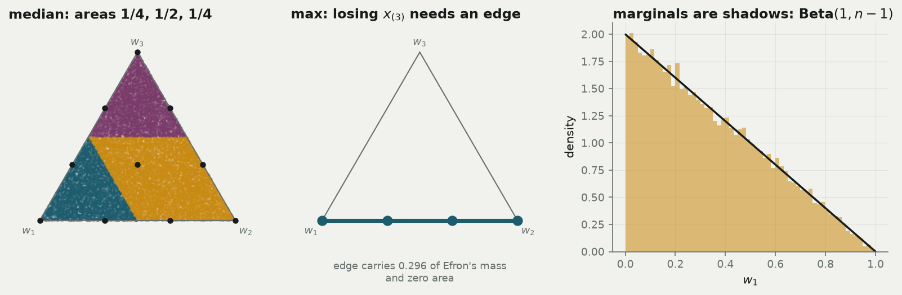
Mean — both work
Derived above: variances \(\tilde s^2/(n+1)\) against \(\tilde s^2/n\), in ratio \(n/(n+1)\). Smooth, linear, no surprises. This is the case the asymptotic theory covers and the case where the choice does not matter.
Median — an exact law, and a century-old interval falls out
First, a definitional point that is usually fudged. Define the median as \(F_w^{-1}(1/2) = \inf\{x : F_w(x) \ge 1/2\}\) for both methods. Without a shared definition the two are being scored on different statistics and the comparison is meaningless.
Now use the uniform-spacings construction. The partial sums of the weights are the order statistics of \(n-1\) uniforms, so the median sits at the rank
\[J = \min\{j : U_{(j)} \ge 1/2\} = 1 + \#\{i : U_i < 1/2\},\]
and each of the \(n-1\) uniforms falls below \(1/2\) independently with probability \(1/2\). Therefore
\[P(\text{median} = x_{(j)}) = \binom{n-1}{j-1} 2^{-(n-1)}.\]
A \(\text{Binomial}(n-1, \tfrac12)\) law over the ranks, completely free of the data values.
At \(n = 5\) the exact law is \((1,4,6,4,1)/16\) = [0.0625, 0.25, 0.375, 0.25, 0.0625], and \(200\,000\) simulated replicates give [0.0624, 0.2489, 0.3745, 0.2519, 0.0623].
Here is the payoff. At \(n = 59\), the central 95% of a \(\text{Binomial}(58, \tfrac12)\) runs from rank 23 to rank 37. So the Bayesian bootstrap’s 95% interval for the median is order statistics 23 and 37 — which is exactly the classical distribution-free sign-test interval for a median. A century-old nonparametric procedure drops out of the Dirichlet posterior with no approximation anywhere.
Caveat: the Bayesian bootstrap does not smooth quantiles
A common belief is that continuous weights cure the notorious lumpiness of bootstrapped quantiles. They do not. Both median laws are atomic, supported on the order statistics, as the exact binomial law above makes plain. The lumpiness comes from the assumption that \(F\) lives on the observed points — which both methods make — not from the discreteness of the weights.
Max and min — mirror images, both useless
Under \(\text{Dirichlet}(1,\dots,1)\) every weight is strictly positive almost surely. So \(\sup \operatorname{supp}(F_w) = x_{(n)}\) with probability one: the posterior for the maximum is a point mass. No uncertainty at all, which is obviously wrong.
Efron is merely non-degenerate. The resample maximum is at most \(x_{(j)}\) exactly when no draw exceeded rank \(j\), and each of the \(n\) independent draws does so with probability \(j/n\):
\[P(\max{}^* \le x_{(j)}) = (j/n)^n \implies P(\max{}^* = x_{(j)}) = \Big(\frac{j}{n}\Big)^n - \Big(\frac{j-1}{n}\Big)^n .\]
The top atom is \(1 - (1-1/n)^n \to 1 - e^{-1} \approx 0.632\).
Simulation confirms \(P(\max^* \le x_{(j)}) = (j/n)^n\) to within 0.0004, and the top atom is 0.6723. Meanwhile 100% of Bayesian replicates return \(x_{(n)}\).
But notice that Efron’s distribution is also bounded above by \(x_{(n)}\). Neither bootstrap can say anything about an extremum, because both assume \(F\) gives zero probability to unseen values, and an extremum is entirely a statement about that region. The maximum is not Hadamard-differentiable, and the bootstrap is provably inconsistent for extremes.
There are three real fixes. Ask for a high quantile instead of the maximum. Fit a generalised Pareto tail by peaks-over-threshold. Or stay Bayesian and use a full Dirichlet process prior with \(\alpha > 0\) and a continuous base measure \(F_0\), which gives unseen values posterior predictive mass \(\alpha/(\alpha + n)\).
Demonstrating the third on IBM: with \(F_0\) a normal fitted to the returns (\(\mu\) = -0.222, \(\sigma\) = 5.027) and the observed maximum +15.584%, the probability that a fresh month beats the record goes from exactly \(0\) at \(\alpha = 0\), to \(1.386 \times 10^{-5}\) at \(\alpha = 1\), to \(6.499 \times 10^{-5}\) at \(\alpha = 5\). The degeneracy is a property of the prior, not of Bayesian inference.
Mode — here the estimator is broken, not the bootstrap
For a distribution supported on distinct observed values, the mode is \(\arg\max_i w_i\): the observation with the largest weight. By exchangeability, the Bayesian posterior over which observation that is must be uniform, \(1/n\) each — completely uninformative.
At \(n = 6\) the Bayesian law is [0.1664, 0.1666, 0.1665, 0.1669, 0.1673, 0.1663] against \(1/6\) = 0.1667.
Efron’s is worse in a more insidious way: it is dominated by ties. At \(n = 6\), 40.7% of resamples have a tied modal count, so the answer is decided by your tie-breaking rule rather than by the data. NumPy’s argmax breaks ties toward the first index, producing the spuriously non-uniform law [0.2519, 0.2048, 0.1741, 0.1485, 0.1223, 0.0983]. That is an artefact of the code, not a finding about the data; with random tie-breaking it is uniform by symmetry.
The lesson here is different from the maximum. There, the bootstrap was being asked an unanswerable question. Here, the estimator is broken: the mode of an empirical distribution over distinct points is meaningless. Fix the estimator — use a weighted kernel density estimate
\[\hat f_w(t) = \sum_i w_i K_h(t - x_i)\]
and take its argmax — and both bootstraps work.
On the IBM returns with a Silverman bandwidth of 2.36 percentage points, the KDE mode has a posterior standard deviation of 1.514 pp under the Bayesian bootstrap and 1.476 pp under Efron — both perfectly usable. Note that the Dirichlet weights slot into the weighted KDE with no modification at all, which is the first concrete instance of a theme that returns below.
The whole distribution — an exact Beta at every point
With \(k = \#\{x_i \le t\}\), the value \(F_w(t)\) is a sum of \(k\) of the weights. Aggregation gives it immediately:
\[F_w(t) \sim \text{Beta}(k,\ n-k) \quad \text{(Bayes)}, \qquad F^*(t) \sim \text{Bin}(n,\ k/n)/n \quad \text{(Efron)}.\]
Same mean \(k/n\); variances \(\frac{k(n-k)}{n^2(n+1)}\) and \(\frac{k(n-k)}{n^3}\), in ratio \(n/(n+1)\) once again.
The Beta is exactly the posterior you would get by treating “is the return below \(t\)?” as a coin flip with a Haldane prior — a reassuring consistency check on the whole construction.
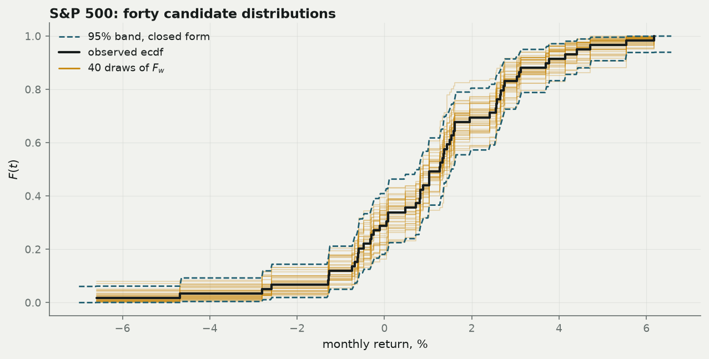
Real data: S&P 500 and IBM
Does any of this change a number you would report?
What the two series are
The S&P 500 series is a broad US equity index — roughly “the market”. The IBM series is a single large-cap stock. Both are converted to monthly percentage changes, and both are cut to the same 59 months, March 2013 to January 2018, so that every comparison below is like-for-like rather than an artefact of one series covering a calmer period than the other.
One row of these datasets is one month. That matters: the resampling unit is a month, so everything here is a statement about month-to-month variation, and every interval below answers “if the next five years of months were drawn from the same process, how differently might this number have come out?”
The objective, as functionals
Four questions are asked of both series, and each is a functional of the return distribution \(F\):
| question | functional | why anyone asks |
|---|---|---|
| what does this earn on average? | \(T(F) = \int x\,dF\) | expected return, the input to any allocation |
| what does a typical month look like? | \(T(F) = F^{-1}(1/2)\) | a median is robust to one crash |
| how often is there a bad month? | \(T(F) = F(-5\%)\) | tail risk, drawdown budgeting |
| how good can a month get? | \(T(F) = \sup \operatorname{supp} F\) | best case — and, as it turns out, unanswerable |
Plus one two-sample question: is the mean of one series different from the mean of the other?
The downstream use case
Concretely, these are the numbers behind three decisions. How much of a portfolio to hold in equities rests on the mean and its uncertainty. How much loss to plan for rests on \(F(-5\%)\) — a risk limit, a capital buffer, a margin calculation. Whether a stock has beaten the market rests on the two-sample difference, and is the question behind every performance-attribution argument.
The point of running both bootstraps on them is that all three decisions are made from an interval, not a point estimate, and the interval is exactly what the two methods disagree about — by nothing at all for the first, and enormously for the second.
Caveat: 59 months is not enough to decide anything
These series are here because they are small, public, and contain a genuine rare-event problem — not because five years of monthly data can settle an investment question. It cannot. The intervals below are wide, the tail estimate rests on a single month, and the i.i.d. assumption both methods make is false for returns. Read them as a worked example of how the uncertainty behaves, not as a finding about markets.
| series | n | mean % | sd % | median % | best | worst | months < -5% |
|---|---|---|---|---|---|---|---|
| S&P 500 | 59 | 1.068 | 2.244 | 1.268 | +6.171 (Mar 2016) | -6.596 (Jan 2016) | 1 |
| IBM | 59 | -0.222 | 5.027 | -0.471 | +15.584 (Mar 2016) | -12.165 (Oct 2014) | 10 |
Caveat: what these two series are
The S&P figures come from the Shiller monthly series, in which each monthly level is the average of that month’s daily closes, not a month-end close. Averaging smooths, so this slightly understates monthly volatility. As a check on the download, the annualised volatility from Feb 1990 - Jun 2026 comes out at 12.3%.
The IBM figures come from unadjusted daily closes, so they are price returns: dividends are excluded, which understates total return by roughly 3–4%/yr over this window.
And, as stated at the top: these returns are not i.i.d., and both bootstraps assume they are.
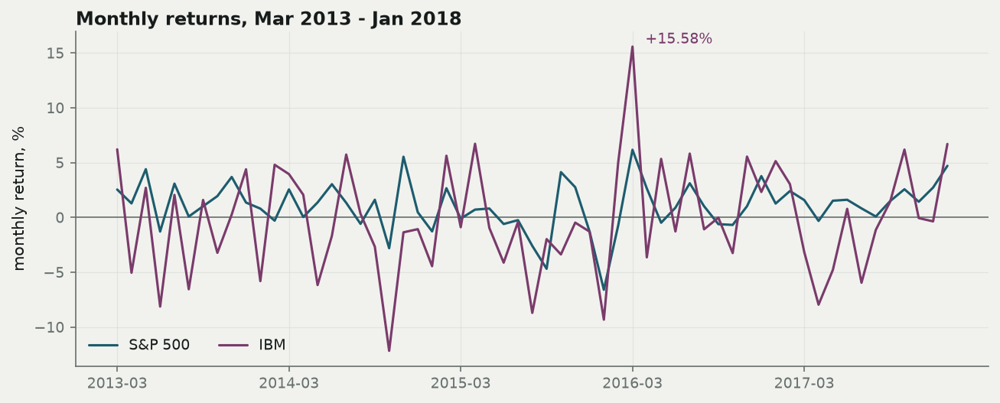
| series | Bayes sd | Efron sd | closed Bayes | closed Efron | classical | ratio | Efron 95% | Bayes 95% |
|---|---|---|---|---|---|---|---|---|
| S&P 500 | 0.28732 | 0.28946 | 0.28723 | 0.28965 | 0.29214 | 0.99262 | [0.486, 1.625] | [0.481, 1.615] |
| IBM | 0.64373 | 0.64838 | 0.64340 | 0.64883 | 0.65440 | 0.99283 | [-1.490, 1.058] | [-1.479, 1.056] |
Lead with this: at \(n = 59\) the choice between the two methods changes your standard error in the third decimal place. The theoretical ratio is \(\sqrt{59/60}\) = 0.9916, and the simulated ratios are 0.9926 and 0.9928.
Result: read the third decimal with care
At \(B = 200\,000\), the relative Monte-Carlo standard error of a simulated standard deviation is about \(1/\sqrt{2B}\) = 0.00158, so a ratio of two simulated sds carries roughly ±0.0045. Several Efron-versus-Bayes comparisons in this post differ by less than that. Where they do, they are ties, and this post reports them as ties.
So spend the section on the two places where the choice does matter.
Where it matters, case 1 — rare events
| series | k | plug-in | Bayes sd | Beta sd | Efron sd | Beta 95% | Efron 95% | P(Efron = 0) |
|---|---|---|---|---|---|---|---|---|
| S&P 500 | 1 | 0.01695 | 0.01671 | 0.01666 | 0.01683 | [0.00044, 0.0616] | [0.00000, 0.0508] | 0.36602 |
| IBM | 10 | 0.16949 | 0.04848 | 0.04844 | 0.04896 | [0.08590, 0.2742] | [0.08475, 0.2712] | 0.00003 |
IBM has \(k = 10\) such months and the two methods agree to within Monte-Carlo noise. The S&P has \(k = 1\) — a single month, January 2016 — and
\[P(\text{that month is omitted}) = \Big(1 - \tfrac{1}{59}\Big)^{59} = 0.365 .\]
So 36.5% of the time Efron’s answer is exactly zero: “a \(-5\%\) month is impossible.” Its 95% interval has a hard zero as its lower endpoint, which is a statement about the resampling scheme rather than about markets. The Bayesian bootstrap never says that. It returns the exact \(\text{Beta}(1, 58)\) posterior, with a lower endpoint of 0.04%.
This generalises, and it is the practical heart of the post: when a statistic rests on a handful of observations, Efron spends a large share of its replicates in a state where those observations do not exist. The same arithmetic reappears on MNIST’s rare classes below.
Where it matters, case 2 — extrema
IBM’s best month, +15.58% in March 2016, is more than twice its second best, +6.72%. Efron reports a bimodal law with 63.4% of its mass on 15.58 and most of the rest near 6.72, and a 95% lower endpoint of +6.21% that is an artefact of the resampling scheme rather than a statement about markets. Bayes reports certainty. Both are useless, in the two different ways derived earlier.
Two-sample comparison
Because the weight vectors for the two series are drawn independently, the difference of means needs no new theory.
| method | point | sd | 95% | P(Δ < 0) |
|---|---|---|---|---|
| Efron | 1.290 | 0.710 | [-0.109, 2.669] | 0.035 |
| Bayes | 1.290 | 0.704 | [-0.109, 2.660] | 0.035 |
The point estimate is +1.29 percentage points per month in the market’s favour, with a 95% interval that straddles zero. Nothing here establishes that IBM underperformed; the data are consistent with no difference at all.
The interpretive difference between the columns is the whole point of the duality section:
Efron licenses
“A one-sided test at the 3.5% level would reject.”
A statement about the procedure’s long-run behaviour over hypothetical repeat samples.
Bayes licenses
“There is a 3.5% posterior probability that IBM’s mean exceeded the market’s, given the model.”
A statement about the parameter.
Same numbers to two decimal places. Only one of them is a probability statement about the thing you wanted to know.
How the gap depends on \(n\)
| window | n | Bayes | Efron | classical | ratio |
|---|---|---|---|---|---|
| Jul 2025 - Jun 2026 | 12 | 0.6996 | 0.7281 | 0.7605 | 0.9608 |
| Mar 2013 - Jan 2018 | 59 | 0.2872 | 0.2896 | 0.2921 | 0.9916 |
| Feb 1990 - Jun 2026 | 437 | 0.1693 | 0.1695 | 0.1697 | 0.9989 |
What the bootstrap costs
Why does the bootstrap feel free, and what is the bill?
Cheap in assumptions. No parametric family, no variance formula to derive, no delta method, no analytic derivatives. For Efron, no prior either — although the duality section established that “no prior” is not quite free: the support assumption is a strong prior belief either way, and only the Bayesian version makes you look at it.
Cheap to implement. The two methods differ by one line.
Code
n, B, rng = 59, 200_000, np.random.default_rng(20260726)
# Efron
W = rng.multinomial(n, np.full(n, 1 / n), size=B) / n
# Bayesian
E = rng.exponential(1.0, size=(B, n)); W = E / E.sum(axis=1, keepdims=True)Cheap to compute — but be precise about why.
- Weight generation is \(O(n)\) per replicate for both, so \(O(Bn)\) overall.
- Working memory is \(O(n)\) per replicate. Vectorising to a dense \((B, n)\) array makes it \(O(Bn)\) — 94 MB at \(B = 200\,000, n = 59\), and 16 GB for the MNIST test set. So chunk the replicate axis; every result in this post is computed in bounded memory that way.
- Evaluating the functional is \(O(n)\) for the mean and for any weighted cumulative-sum statistic.
- The sort-once trick, which falls out of the weights view. Order-statistic functionals — median, quantiles, max, min, the CDF — look like they need a re-sort per replicate, \(O(Bn\log n)\), if you think of Efron as producing a new dataset. Viewing it as weights lets you sort the data once, \(O(n\log n)\), and make every replicate a single \(O(n)\) cumulative sum. The same trick serves both methods. Viewing Efron as a weighted bootstrap is the optimisation.
Both are \(O(Bn)\). The differences are constants, and constants must be measured rather than assumed.
| operation | ms |
|---|---|
| Efron weights via rng.multinomial | 354.7 |
| Bayes weights via rng.exponential + normalise | 44.7 |
| Efron via index resampling (rng.integers) | 17.7 |
| Efron median, naive re-sort per replicate | 101.0 |
| Bayes median, sort once + cumulative sum | 76.4 |
The counter-intuitive result, which surprises most people: generating Dirichlet weights is about 7.9× faster than NumPy’s multinomial sampler at this \(n\). rng.multinomial is expensive when there are many categories. This is library-specific and version-specific; the table above was regenerated when this page was built, and you should regenerate it on yours.
Where the Bayesian bootstrap is asymptotically cheaper: sometimes it needs \(B = 0\). The CDF at any point is \(\text{Beta}(k, n-k)\); the median’s rank law is \(\text{Binomial}(n-1, \tfrac12)\); accuracy is \(\text{Beta}(k, n-k)\). Closed forms, exact, no simulation. Efron has no comparable shortcut and must simulate.
Degenerate-replicate waste. If your estimator fails on a resample that is missing a class, your effective \(B\) is lower than your nominal \(B\) — you paid for replicates you had to discard. The MNIST rare-class case below quantifies this.
Both methods are embarrassingly parallel. And for streaming settings there is the Poisson bootstrap: because its weights are i.i.d., it needs no knowledge of \(n\), uses \(O(1)\) memory and a single pass, which is why it is the version that runs at scale.
Not cheap, and this is the honest part: the total cost is \(B\) times the cost of the estimator. For a mean that is nothing. For a neural network it is everything.
MNIST: where cheap stops being cheap
What the dataset is
MNIST is 70,000 greyscale images of handwritten digits, 28×28 pixels, labelled 0–9: 60,000 for training and a fixed, public test set of 10,000. It is the standard first benchmark in machine learning, which is exactly why it is useful here — nobody is going to be misled about the modelling, so the attention stays on the uncertainty.
The model that produced every number in this section is a 784–128–10 MLP trained for three epochs, on torch 2.13.0 on mps. Its test accuracy is 0.9687 — \(k = 9\,687\) correct out of \(n = 10\,000\) — and a single fit takes 4.2 seconds.
The crucial structural point is that there are two different populations you could resample here, and they answer different questions:
Resample the test set
One row = one test image. \(n = 10\,000\).
Answers: how much would this metric move if I had drawn a different test set from the same distribution?
Costs nothing — the model is already trained.
Resample the training set
One row = one training image. \(n = 60\,000\).
Answers: how much would this metric move if I had trained on a different sample?
Costs a full refit per replicate.
The objective, as functionals
Every evaluation metric is a functional of the distribution of test examples:
| metric | functional | effective denominator |
|---|---|---|
| overall accuracy | \(T(F) = F(\text{correct})\) | all 10,000 |
| per-class recall | \(F(\text{correct} \mid \text{true} = c)\) | ~1,000 |
| per-class precision | \(F(\text{correct} \mid \text{pred} = c)\) | ~1,000 |
| a confusion-matrix cell | \(F(\text{true}=c,\ \text{pred}=c')\) | can be single digits |
The downstream use case
Three decisions rest on these numbers. Ship or don’t ship: is accuracy above the threshold in the requirements, including uncertainty? Model A versus model B: is a 0.3-point gap on the leaderboard real, or inside the noise of a 10,000-example test set? Where to spend the next labelling budget: which class is genuinely worst, as opposed to merely unlucky in this particular test set?
The third is where the choice of bootstrap starts to matter, because per-class and per-cell metrics have small denominators — and that is precisely the regime, established on the S&P tail above, where Efron’s resampling spends a large share of its replicates in a world where the relevant examples do not exist.
The cheap path — bootstrap the evaluation, not the training
Train once. Cache the per-example correctness vector. Now every evaluation metric is a functional of the empirical distribution of test examples, and bootstrapping is free.
Accuracy is \(\sum_i w_i \mathbb{1}\{\text{correct}_i\}\) — a sum of \(k\) of the weights. By the aggregation property derived earlier, the Bayesian posterior is
\[\text{accuracy} \mid \text{data} \;\sim\; \text{Beta}(k,\ n-k)\]
exactly, with no simulation at all.
Code
# The entire Bayesian bootstrap for accuracy, with B = 0.
from scipy import stats
posterior = stats.beta(k_te, n_te - k_te)
print(f"accuracy {k_te/n_te:.4f} sd {posterior.std():.6f} "
f"95% [{posterior.ppf(.025):.5f}, {posterior.ppf(.975):.5f}]")accuracy 0.9687 sd 0.001741 95% [0.96520, 0.97202]Monte Carlo agrees: 20,000 simulated replicates give a standard deviation of 0.001747 against the exact 0.001741. Efron gives \(\text{Bin}(n, k/n)/n\), indistinguishable at this \(n\).
| metric | point | Bayes sd | Efron sd | support |
|---|---|---|---|---|
| macro-F1 | 0.96844 | 0.00175 | 0.00172 | 10000 |
| recall, class 0 | 0.98776 | 0.00350 | 0.00343 | 980 |
| recall, class 1 | 0.98767 | 0.00327 | 0.00328 | 1135 |
| recall, class 2 | 0.96415 | 0.00580 | 0.00577 | 1032 |
| recall, class 3 | 0.95941 | 0.00626 | 0.00624 | 1010 |
| recall, class 4 | 0.97352 | 0.00519 | 0.00514 | 982 |
| recall, class 5 | 0.96300 | 0.00627 | 0.00632 | 892 |
| recall, class 6 | 0.97599 | 0.00492 | 0.00490 | 958 |
| recall, class 7 | 0.95817 | 0.00628 | 0.00625 | 1028 |
| recall, class 8 | 0.95380 | 0.00664 | 0.00669 | 974 |
| recall, class 9 | 0.96135 | 0.00611 | 0.00599 | 1009 |
Where the two diverge on real ML numbers: rare cells
Take any per-class or per-slice metric whose denominator is small. When an error count is \(k = 1\) out of \(n = 50\):
Efron’s bootstrap reports an error rate of exactly zero in 36.3% of replicates (theory: 36.4%) — the identical \(((n-k)/n)^n\) atom that appeared in the S&P tail. A 95% interval whose lower endpoint is a hard zero is a statement about the resampling scheme, not about the classifier. The Bayesian answer is the exact \(\text{Beta}(1, 49)\), with a 95% interval of [0.00052, 0.0725].
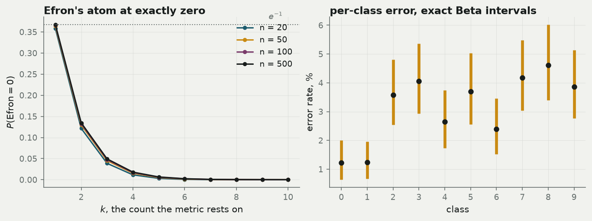
Recommendation, stated plainly: use the Bayesian bootstrap, or its exact Beta form, for any per-class or per-slice metric with a small denominator. The reason is one sentence — continuous weights cannot delete an observation.
The expensive path — bootstrap the training
This is the weighted likelihood bootstrap: draw \(w^{(b)} \sim \text{Dirichlet}(1,\dots,1)\) over the \(n\) training points and minimise
\[\sum_{i=1}^{n} w^{(b)}_i \,\ell(x_i, \theta).\]
It gives an approximate posterior for any estimator defined by minimising a loss — GLMs, boosted trees, neural nets — with no Metropolis step anywhere. In PyTorch it is a per-example loss multiplied by a weight tensor:
Code
criterion = nn.CrossEntropyLoss(reduction="none") # the whole trick
...
per_example = criterion(net(xb), yb)
loss = (per_example * wb).mean() # the weighted likelihood bootstrap
loss.backward()One line different from weighted training. The Efron equivalent is WeightedRandomSampler or integer duplication.
| what | fits | wall clock |
|---|---|---|
| single fit (the cheap path trains once) | 1 | 4.2 s |
| weighted likelihood bootstrap, B = 20 | 20 | 41.3 s |
| extrapolated to B = 200 | 200 | 6.9 min |
| a model taking 6 h per fit, B = 200 | 200 | 1200 h |
At \(B = 20\) the refits give a spread of test accuracy with standard deviation 0.00236, against the evaluation-only posterior standard deviation of 0.001741. The retraining interval is wider, and it is measuring something different — which brings us to the part that should not be softened.
The real drawbacks
- The bootstrap prices sampling variability of the data. It does not price model misspecification, distribution shift, label noise, or the choice of architecture.
- It does not capture training randomness — initialisation, SGD ordering — unless you deliberately resample that too, in which case you are measuring a different quantity and should say which.
- Bootstrapping the test set tells you about test-set sampling variability, not about behaviour on a new deployment distribution. On a fixed public benchmark like MNIST everyone shares one test set, so this interval does not cover the thing people usually want when they ask how accurate a model is.
- Retraining-based intervals inherit every pathology of the training procedure, including non-convexity: two fits with different weights may land in different basins, and the resulting spread mixes parameter uncertainty with optimisation noise. The 0.00236 above contains both, inseparably.
- Both bootstraps still assume i.i.d. sampling. Grouped, temporal or hierarchical data need the resampling to happen at the level of the independent unit.
Estimators that resist a weight parameter
When can you not do this at all?
The weighted likelihood bootstrap needs the weights to enter the objective linearly, as \(\sum_i w_i \ell(x_i, \theta)\). Four distinct reasons that fails, ordered by why — the ordering is the point.
(a) The weighting is ambiguous
U- and V-statistics, and anything built on pairs or tuples: Gini, Kendall’s \(\tau\), Spearman, Mann–Whitney \(U\), the Hodges–Lehmann estimator, energy distance, MMD. For a statistic \(\sum_{i<j} h(x_i, x_j)\) there is no single obvious weighted form. Using \(w_i w_j\) is defensible but is not the only choice, and different choices give different answers.
Concretely, on the S&P window the Hodges–Lehmann estimator (the median of the \(\binom{59}{2}\) pairwise averages) weighted by \(w_i w_j\) has posterior standard deviation 0.2537, while weighting by \(\min(w_i, w_j)\) gives 0.1378 — a 46% difference produced entirely by a modelling choice with no principled resolution. Efron sidesteps the question by producing an actual sample, which has an unambiguous set of pairs.
(b) A count is structurally required
\(k\)-nearest-neighbours: is \(k\) a count of points, or a mass of \(k/n\)? Decision trees with min_samples_leaf — a count, which is precisely why scikit-learn also offers min_weight_fraction_leaf, the weighted-world translation and the canonical example of the fix. Cross-validation fold construction. Anything with an integer threshold or a hard cardinality constraint. The number of distinct values. And the extrema and the mode from earlier, which are functionals of the support rather than of the masses.
(c) The objective does not decompose over observations
Time series and dependent data generally: an AR or GARCH likelihood does not factor into per-observation terms that reweighting respects, and reweighting individual months breaks exactly the dependence you care about. This applies directly to the returns used throughout this post — see the caveat at the top.
Also: ranking and contrastive losses defined over pairs or batches; a softmax normalised over a whole dataset; batch normalisation, whose statistics depend on batch composition rather than on any weighted sum; graph and network data; and clustered or matched designs, where the weights must attach to clusters rather than to rows. The fix in that last case is a Dirichlet-weighted block bootstrap — the same idea, one level up. That is also the fix for the non-i.i.d. returns problem.
(d) The software will not take weights
The mundane case, and by far the most common. There is a clean escape hatch, and it is derivable.
Draw \(w \sim \text{Dirichlet}(1,\dots,1)\), then resample \(m\) points i.i.d. with probabilities \(w\) instead of uniformly, and hand that ordinary-looking sample to the weight-blind code.
What does this cost? Use the law of total variance on the resample mean \(\bar X_m\), conditioning on \(w\). Given \(w\), the \(m\) draws are i.i.d. from \(F_w\), so \(E[\bar X_m \mid w] = \mu_w := \sum_i w_i x_i\) and \(\operatorname{Var}(\bar X_m \mid w) = \sigma^2_w/m\) where \(\sigma^2_w = \sum_i w_i x_i^2 - \mu_w^2\). Then
\[\operatorname{Var}(\bar X_m) = \underbrace{\operatorname{Var}(\mu_w)}_{=\ \tilde s^2/(n+1)} + \frac{1}{m}\,E[\sigma^2_w].\]
For \(\text{Dirichlet}(1,\dots,1)\), \(E[\sigma_w^2] = \frac{n}{n+1}\tilde s^2\), and substituting gives
\[\operatorname{Var}(\bar X_m) = \frac{\tilde s^2}{n+1} + \frac{n\,\tilde s^2}{m(n+1)} = \frac{\tilde s^2}{n+1}\Big(1 + \frac{n}{m}\Big).\]
The inflation factor is exactly \(1 + n/m\).
| m | m/n | MC variance | formula | inflation |
|---|---|---|---|---|
| 5.000 | 1.000 | 3.328 | 3.333 | 2.000 |
| 25.000 | 5.000 | 2.002 | 2.000 | 1.200 |
| 100.000 | 20.000 | 1.749 | 1.750 | 1.050 |
| 500.000 | 100.000 | 1.682 | 1.683 | 1.010 |
So \(m = n\) doubles the variance — that is exactly the \((m = n, \alpha = 1)\) corner warned about earlier — while \(m \approx 100n\) costs about 1%. This is the Pólya-urn bridge turned into a recipe, and it is the single most useful practical takeaway in the section.
When to use which
Reach for the Bayesian bootstrap when you want a posterior rather than a sampling distribution; when degenerate resamples would break the estimator — a missing class, a zero-variance feature, an empty stratum; when the statistic leans on few observations, which is the rare-cell case that recurs everywhere in machine learning; when you want to differentiate through the weights or drop them into a loss; and when you want an exact answer instead of a simulated one.
Reach for Efron when your estimator needs a sample rather than weights; when you want to make no Bayesian commitment at all; and when you want the surrounding machinery — BCa, bootstrap-\(t\), block, double bootstrap — which mostly exists only for the Efron version.
And note that both fail identically on dependent data, extrema, heavy tails, and very small \(n\). Those failures matter far more than the choice between the two.
Reference card and reproducibility
| quantity | Efron | Bayesian bootstrap |
|---|---|---|
| weight mean | \(1/n\) | \(1/n\) |
| weight variance | \((n-1)/n^3\) | \((n-1)/[n^2(n+1)]\) |
| weight covariance | \(-1/n^3\) | \(-1/[n^2(n+1)]\) |
| marginal law | \(\mathrm{Bin}(n,1/n)/n\) | \(\mathrm{Beta}(1,n-1)\) |
| \(P(w_i = 0)\) | \((1-1/n)^n \to e^{-1}\) | \(0\) |
| variance of the mean | \(\tilde s^2/n\) | \(\tilde s^2/(n+1)\) |
| median law | no closed form | \(P(x_{(j)}) = \binom{n-1}{j-1}2^{-(n-1)}\) |
| \(F(t)\), \(k=\#\{x_i \le t\}\) | \(\mathrm{Bin}(n,k/n)/n\) | \(\mathrm{Beta}(k,n-k)\) |
| a proportion / accuracy | \(\mathrm{Bin}(n,k/n)/n\) | \(\mathrm{Beta}(k,n-k)\), exact |
| maximum | \(P(\max \le x_{(j)}) = (j/n)^n\) | point mass at \(x_{(n)}\) |
| mode of \(\hat F\) | decided by tie-breaking | uniform, \(1/n\) each |
| support | a lattice of \(\binom{2n-1}{n-1}\) points | the whole simplex |
| generator | \(\mathrm{Poisson}(1)\) cond. \(\sum W_i = n\) | \(\mathrm{Exp}(1)\), normalised |
Each method is six lines.
Code
def efron_weights(n, B, rng):
return rng.multinomial(n, np.full(n, 1 / n), size=B) / n
def dirichlet_weights(n, B, rng):
E = rng.exponential(1.0, size=(B, n))
return E / E.sum(axis=1, keepdims=True)Reproducibility
fig-simplex ok
fig-point-is-dist ok
fig-dirichlet ok
fig-prior ok
fig-lattice ok
fig-marginal ok
fig-regions ok
fig-staircase ok
fig-returns ok
fig-mnist ok
------------------------------------------------
10 figures checked, 0 collisions| item | value |
|---|---|
| seed | 20260726 |
| replicates, headline | 200,000 |
| replicates, figures | 20,000 |
| python | 3.13.2 |
| numpy | 2.5.1 |
| scipy | 1.18.0 |
| pandas | 3.0.5 |
| matplotlib | 3.11.1 |
| torch | 2.13.0 |
| MNIST backend | torch 2.13.0 on mps |
| S&P 500 source | Shiller monthly series, datasets/s-and-p-500 |
| IBM source | plotly/datasets all_stocks_5yr.csv |
| data retrieved | 2026-07-26 |
Every figure above is reproducible from the single seed 20260726; each experiment derives its own independent generator from it by name, so adding an experiment never shifts an existing one. Every closed form stated in the prose is asserted against simulation in a code cell at build time, with tolerances set by the Monte-Carlo standard error — this page does not render if the algebra and the arithmetic disagree. The figure layout checker reported above walks every text artist in every figure and fails the build on any overlap.
Data provenance and its caveats are given in the sample-description section: the S&P series is Shiller’s monthly averages of daily closes, and the IBM series is unadjusted closes and therefore price-only. Both were retrieved on 2026-07-26. The MNIST test set is fixed and public, so the intervals here describe test-set sampling variability and nothing else.
References
- Efron, B. (1979). Bootstrap methods: another look at the jackknife. Annals of Statistics 7(1), 1–26.
- Rubin, D. B. (1981). The Bayesian bootstrap. Annals of Statistics 9(1), 130–134.
- Ferguson, T. S. (1973). A Bayesian analysis of some nonparametric problems. Annals of Statistics 1(2), 209–230.
- Lo, A. Y. (1987). A large sample study of the Bayesian bootstrap. Annals of Statistics 15(1), 360–375.
- Newton, M. A. and Raftery, A. E. (1994). Approximate Bayesian inference with the weighted likelihood bootstrap. JRSS B 56(1), 3–48.
- Præstgaard, J. and Wellner, J. A. (1993). Exchangeably weighted bootstraps of the general empirical process. Annals of Probability 21(4), 2053–2086.
- Blackwell, D. and MacQueen, J. B. (1973). Ferguson distributions via Pólya urn schemes. Annals of Statistics 1(2), 353–355.
- Sethuraman, J. (1994). A constructive definition of Dirichlet priors. Statistica Sinica 4, 639–650.
- Efron, B. (2012). Bayesian inference and the parametric bootstrap. Annals of Applied Statistics 6(4), 1971–1997.
A companion post, The Poor Person’s Bayesian, takes the survey-level view of the same territory: what the bootstrap-as-cheap-Bayes analogy buys you, and the point at which it stops being true.